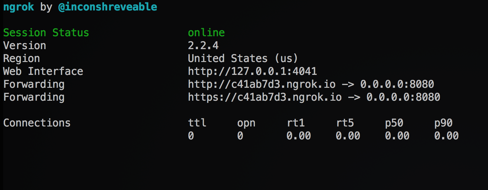

For many APIs it is desirable to authenticate requests made to an endpoint. For an interactive voice response (IVR) system API which returns TwiML, the only entity that should likely be allowed access in production is Twilio. This post will cover implementation of request signature validation in a Python IVR web application that uses the Pyramid web framework.
Allowing Twilio Access To localhost
Of the many ways to create a public URL to serve TwiML to Twilio, ngrok is one of the simplest. ngrok will be used for this tutorial and is available here. Once ngrok is downloaded and unzipped, the following command should be run from the directory where it is located:
./ngrok http 0.0.0.0:8080When the above command is run in the terminal this output should appear:  For this demo the HTTPS link will be used. Copy it, and we'll paste it in the next section.
{kind=link}
Setting Up The Twilio Account
To follow along with this demo a Twilio account is required, as the auth
token associated with the account is an integral part of request validation.
A Twilio account may be created here
.
Once logged into a Twilio account, navigate to the
phone numbers
section and select the phone number that will be used for this demo.
Then set the incoming webhook on its configuration page like so and ensure
the trailing slash is included:
The "Common Stumbling Blocks" section below explains the trailing slash
inclusion.
Proceed to the console dashboard
to obtain the account's auth token, which is circled below.

Setting Up And Serving The Demo App
Now it's time to setup and serve the demo app with the following commands:
cd /tmp
curl -LOk https://github.com/patrickyevsukov/twilio_demo_pyramid_auth/archive/master.zip
unzip master.zip
mv twilio_demo_pyramid_auth* twilio_demo_pyramid_auth
cd twilio_demo_pyramid_auth
pip install virtualenv
virtualenv --clear venv
. ./venv/bin/activate
pip install -e .
export TWILIO_AUTH_TOKEN=XXXX
./tools/serve -c examples/config.ini
Note that the use of a TWILIO_AUTH_TOKEN
environment variable is to prevent inclusion of this sensitive information
in a config file or source code, where it may be accidentally version
controlled. In production systems, a
more robust solution for safely including the auth token in a Twilio app
may be desirable.
The app should now be available to Twilio and calling the phone number configured in the previous section should result in the following output in the terminal serving the Pyramid app:
1970-01-01 00:00:00,001 INFO [twilio_demo_pyramid_auth.security] Authenticating GET /
1970-01-01 00:00:00,002 INFO [twilio_demo_pyramid_auth.security] Authentication SUCCESS
1970-01-01 00:00:00,003 INFO [twilio_demo_pyramid_auth.security] Authenticating POST /
1970-01-01 00:00:00,004 INFO [twilio_demo_pyramid_auth.security] Authentication SUCCESS
1970-01-01 00:00:00,005 INFO [twilio_demo_pyramid_auth.security] Authenticating GET /accessible
1970-01-01 00:00:00,006 INFO [twilio_demo_pyramid_auth.security] Authentication SUCCESSFor additional information on building applications in Python with the Twilio Voice API, see the quickstart documentation.
How To Spot A Fake Request

When the webhook configured to handle incoming phone calls receives a request
from Twilio, the request header will contain an X-Twilio-Signature. This value,
along with the account's auth token is all that is necessary to determine if
a request actually originated from Twilio.
Note: The process by which Twilio generates this header value is delineated
here.
In determining if a request to a certain endpoint should be allowed, Pyramid
takes two concepts into account: authentication and authorization.
Authentication may be thought of as checking if the requester is who they
claim to be, and authorization may be thought of as checking if the requester
has permission to do what they are attempting.
Verifying request signatures is an authentication concern and should be
handled via the Pyramid app's authentication policy. Pyramid includes no
authentication policies which cleanly allow for only validation of
Twilio request signatures. They all center around a userid and facilitate
the creation and usage of sessions. Pyramid's
AuthTktCookieHelper comes close to a good fit, but it provides a lot of
extra functionality that is not necessary for simple, stateless request
validation.
Thankfully, Pyramid makes it easy to define and include a custom authentication
policy. A canonical authentication policy should implement the
IAuthenticationPolicy interface and define all of its methods; however,
doing so will result in a far more fully featured policy than is necessary
for this demo.
Note: Twilio also supports HTTP basic authentication and Pyramid includes
a
BasicAuthAuthenticationPolicy out-of-the-box. This tutorial
focuses only on digest authentication which may be preferable as it does
not require the inclusion of credentials in every request URL where they
may be susceptible to interception.
The custom
TwilioSignatureAuthenticationPolicy defined for this demo contains an
effective_principals
method definition. This is the only method Pyramid requires for an
authentication policy to be compatible with the
ACLAuthorizationPolicy.
A Pyramid app will call the authentication policy's effective_principals
method for each HTTP request to one of its endpoints, making this a
convenient location to include the Twilio RequestValidator.
class TwilioSignatureAuthenticationPolicy(object):
def _is_authentic_twilio_request(self, request):
logger.info("Authenticating {} {}".format(request.method, request.path))
twilio_auth_key = os.environ["TWILIO_AUTH_TOKEN"]
request_validator = RequestValidator(twilio_auth_key)
twilio_signature = request.headers.get("X-Twilio-Signature", "")
is_authentic = request_validator.validate(
request.url,
request.POST,
twilio_signature,
)
if is_authentic:
logger.info("Authentication SUCCESS")
return is_authentic
logger.info("Authentication FAILURE")
return is_authentic
def effective_principals(self, request):
principals = [pyramid_security.Everyone]
if self._is_authentic_twilio_request(request):
principals.append(Twilio)
return principals
The
access control list of the
root context defined for this demo app's views only allows the "view"
permission to the Twilio security group:
class RootContext(object):
__name__ = ""
__parent__ = None
def __init__(self, request):
pass
@property
def __acl__(self):
return (
(Allow, Twilio, "view"),
)
If the signature generated by the RequestValidator does not
match the X-Twilio-Signature attached to the request, then
the authentication policy will not include the Twilio
principal in its list of effective principals and the requester will be
denied access to
any endpoint requiring "view" permission.
{kind=link}
Common Stumbling Blocks
The URL passed to the RequestValidator.validate method must be identical to
the one used by Twilio. Concerns such as trailing slashes and request URI
schemes – either http
or https in the case
of Twilio – must be taken into account.
By default, the Pyramid
request.url method will generate a URL ending in a trailing slash for
the root URL whereas ngrok displays the root URL without one:
Copying and pasting this ngrok URL, exactly as it appears will result in
request validation failure, so ensure a trailing slash is appended when
configuring the call handler webhook:

If the Pyramid application that has been configured to serve as the call
handler sits behind a load balancer, or any service which terminates TLS,
it is critical that these lines appear in the
app's configuration file. Failure to include them will result in calls
to Pyramid's various URL generation methods returning URLs with the
incorrect scheme (i.e. http://ivr.example.com instead of
https://ivr.example.com).
[app:main]
use = egg:twilio_demo_pyramid_auth
filter-with = prefix
pyramid.includes = pyramid_exclog
support_number = 000-000-0000
# The below filter config will ensure that the `X-Forwarded-Proto` header
# is respected when pyramid generates URLs. This is critical if your application
# sits behind an ELB which terminates TLS.
#
# docs.pylonsproject.org/projects/waitress/en/latest/#using-paste-s-prefixmiddleware-to-set-wsgi-url-scheme
#
[filter:prefix]
use = egg:PasteDeploy#prefix
Another point to remember for GET requests is that Twilio passes various
query string parameters when hitting the webhook; however, for POST requests
this information resides in the request body. This may be a stumbling block
for Pyramid
users,as the widely used
request.params property merges the query string params with the request
body for convenience. Ensure that for validation purposes, the
request.POST property is used instead. This property will return an
empty
dictionary-like objecton GET requests, avoiding interference with
validation. Below is the behavior of request.POST during a
HTTP GET:
>>>> request.POST
<NoVars: Not a form request>
>>>> type(request.POST)
<class 'webob.multidict.NoVars'>
>>>> dict(request.POST)
{}Error Handling
In the event that a problem arises with the API attempting to serve TwiML
either due to request validation failure or some other reason, Twilio will
read a stock error message to the caller and end the call. By default the
caller hears:
"We're sorry, an application error has occurred. Goodbye."
It may be desirable to handle errors in a custom manner and, for example, forward callers to a call center in the event of an exception with the API. Pyramid provides a set of view decorators to make catching and handling errors fairly simple. In this example, custom TwiML will be returned and the caller will be redirected to a call center for assistance:
@view_defaults(
renderer="xml",
)
class ExceptionViews(BaseViews):
def _handle_exception(self):
response = VoiceResponse()
self.request.response.status_int = 200
message = (
"My apologies. We seem to be experiencing technical difficulties. "
"You will now be redirected to our call center for assistance."
)
response.say(
message,
voice="woman",
language="en",
)
response.dial(self.request.registry.settings["support_number"])
return response
@notfound_view_config()
def notfound(self):
return self._handle_exception()
@forbidden_view_config()
def forbidden(self):
return self._handle_exception()
@exception_view_config(httpexceptions.HTTPServerError)
def exception(self):
return self._handle_exception()The above code defines views to handle 403, 404, and 500 errors. In the event one of these errors occurs, the custom message defined above will be read to the user. It is important that the status code is set to 200, as a failure to do so will result in Twilio ignoring the TwiML we send and defaulting to the stock error message.
Closing Notes
For additional information on building applications in Python with the
Twilio Voice API, see the
quickstart documentation.
If any issues are encountered while attempting this tutorial, please note
them in the
GitHub repo issue tracker so they can be resolved in a timely manner.
My contact information is available on
https://patrick.yevsukov.com/ and my GitHub profile is
https://github.com/patrickyevsukov/.